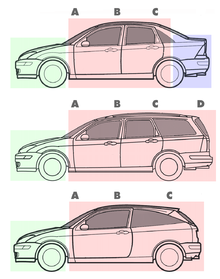

Karoserie
Karoserie představuje u většiny současných automobilů jeho nosnou část. Poskytuje prostor pro posádku a náklad a umožňuje montáž všech ostatních částí vozidla. Karoserie historicky starších vozidel byla pojata jako podvozková. Byla tvořena nosným rámem z (převážně ocelových) nosníků, na které byly přivařeny kapotovací plechy, které tvořily uzavřený prostor vozidla. Karoserie dnešních vozidel je koncipována jako samonosná, to znamená, že neobsahuje nosný rám. Nosnou funkci přebírají samotné kapotovací plechy. Mezistupněm je karoserie polonosná. Různé části karoserie jsou vyrobeny z různých materiálů. Používány jsou běžné konstrukční oceli, nízko a vysokolegované oceli, oceli s transformačně indukovanou pevností, nerezové oceli, tvárná litina, hliníkové slitiny, plasty aj. Karoserie hraje velmi důležitou roli při zajišťování aktivní i pasivní bezpečnosti vozidla. Proto obsahuje deformační zóny, jejichž účelem je pohltit při nehodě co největší množství energie. Podle způsobu, jakým jsou v karoserii odděleny prostory pro motor, posádku a náklad rozdělujeme osobní vozy na: Jednoprostorové Motor, posádka i náklad od sebe nejsou odděleny pevnými příčkami karoserie. Tato konstrukce se dnes již nepoužívá.
Dvouprostorové
Prostor pro motor je oddělen od prostoru pro posádku a náklad.
Tříprostorové
Oddělené prostory pro motor, posádku i náklad.
Podle tvaru karoserie rozlišujeme tyto typy osobních automobilů:
Sedan
Tříprostorová čtyřdveřová karoserie pro 4–5 osob. Zadní stěna zavazadlového prostoru je svislá s výraznou hranou.
Kombi
Dvouprostorová pětidveřová karoserie pro 4–7 osob. Prostor pro zavazadla je zvětšen, přístupný dveřmi ukotvenými ve střeše vozu.
Hatchback.
Dvouprostorová tří- nebo pětidveřová karoserie pro 4–5 osob. Zavazadlový prostor je přístupný dveřmi, které jsou ukotveny ve střeše vozu.
Liftback.
Dvouprostorová pětidveřová karoserie pro 4–5 osob vzhledově podobná sedanu. Výklopná je ovšem celá záď včetně zadního skla, blíží se tak hatchbacku.
Coupé.
Dvoudveřová tříprostorová karoserie určená pro 2–4 osoby. Záď vozu se směrem dozadu silně svažuje. Tato koncepce se využívá především u sportovně zaměřených vozů.
Kabriolet
Tříprostorová otevřená dvou- nebo čtyřdveřová karoserie pro 2–4 osoby. Některé vozy mají ještě druhou řadu sedadel, na které je ale prostor pro cestující velmi stísněný. Střecha je obvykle plátěná nebo kovová, skládací. V případě pevné střechy se užívá také označení coupé kabriolet (CC).
Roadster
Dvoudveřová tříprostorová karoserie pro 2–3 osoby. Jen jedna řada sedadel, střecha plátěná skládací nebo pevná odnímatelná (tzv. hard-top).
Off-road.
Dvouprostorová pětidveřová karoserie pro 4–9 osob. Stavba karoserie je podřízena dobré průchodnosti terénem. Má větší světlou výšku a velké nájezdové úhly.
SUV
(Sport Utility Vehicle, sportovní užitkový vůz.) Dvouprostorová pětidveřová karoserie pro 4–7 osob. Vzhled se snaží evokovat off-road, konstrukce je však zaměřena hlavně na jízdu po silnici, ale v některých případech je do různé míry upravena i pro zvládnutí lehčího terénu.
MPV
(Multi Purpose Vehicle, víceúčelový vůz.) Dvouprostorová karoserie pro 5–7 osob. Pětidveřová, případně s posuvnými zadními dveřmi. Auta zaměřená pro rodinu, velký vnitřní prostor s variabilním uspořádáním
Shooting brake
Automobil kombinující coupé a combi, zjednodušeně třídveřové combi. Dvouprostorová karoserie pro 4–5 osob.
Limuzína
Tříprostorová čtyř- až šestidveřová karoserie pro 6 až 9 cestujících, prostor pro cestující je zpravidla oddělen mezistěnou od prostoru řidiče.